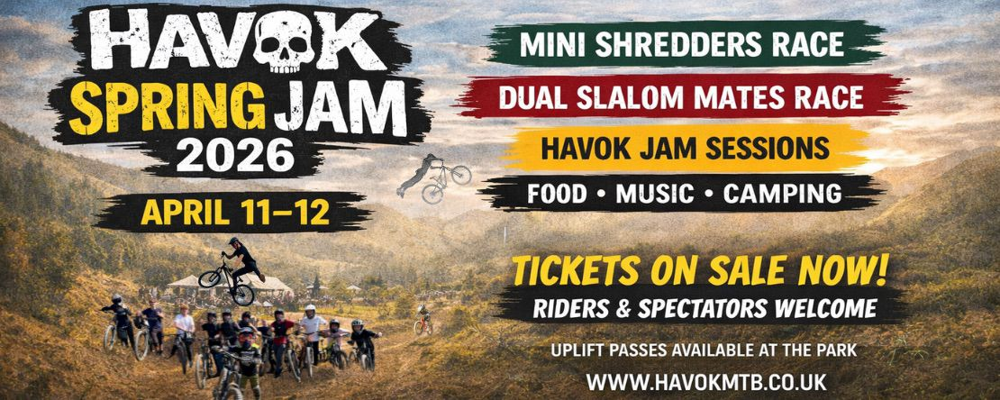
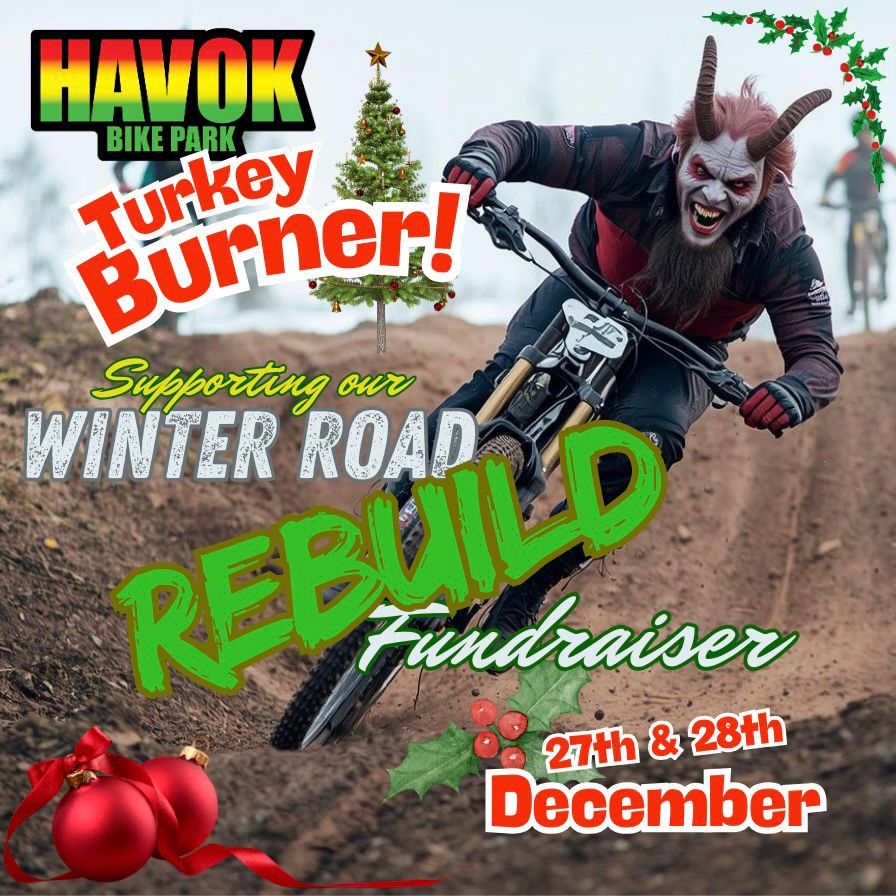
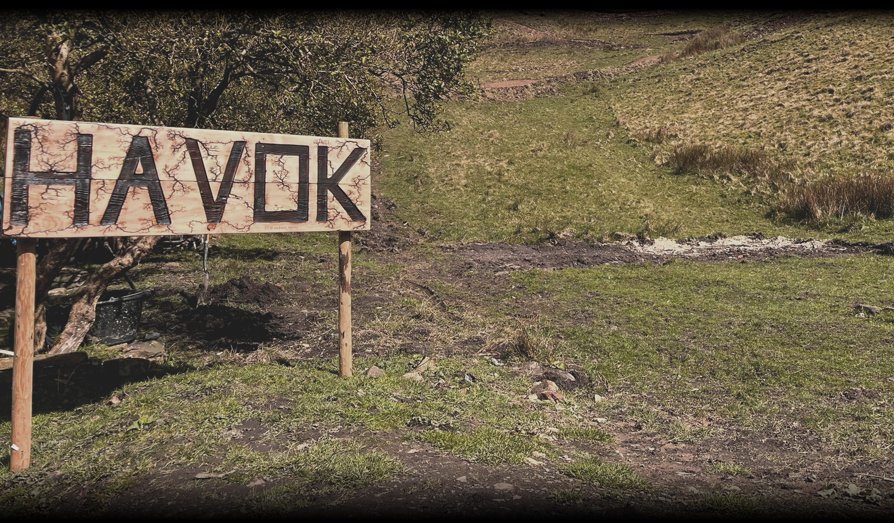

HAVOK BIKE PARK RACE WEEKEND
We're kicking off the 2026 season with the Havok Spring Jam, bringing everyone together for a full weekend of riding,
racing and good times!
Join us on Saturday 11th and Sunday 12th April 2026 for two full days of the usual Havok rowdiness!
Event Times:
10:00 - 18:00 both days
Weekend camping is available.
Please note that event details will continue to be updated as plans are finalised. An itinerary and confirmed
timings will be released soon. We'll also be sharing updates, announcements and any new additions across our social media channels,
so keep an eye out for the latest information.
Click here for more information!

The Havok Winter Road Rebuild TURKEY BURNER!
Hi everyone — Sam & Gem here from Havok Bike Park!
We would be incredibly grateful if you could take a few minutes to read an update of our current siutation regarding
the uplift road. As you all know, winter can take its toll on all sorts of things, be it buildings, vehicles, or in our case,
uplift roads. This park is a special place for the community and we work tirelessly to keep it that way, which
occasionally means we need to ask for help! Please visit the link below to find out more on this situation and find out how you
can help directly, and earn some truly awesome rewards as a HUGE thank you from us for all the continued support we get to make this happen for you guys!!
www.crowdfunder.co.uk/p/the-havok-winter-road-rebuild
Alongside this - we are STOKED to announce our mucky, cosy, mulled wine filled christmas event - the TURKEY BURNER!
Join us Dec 27th & 28th for a day of chilled vibes, mulled wine, crispy tracks, raffles and music at HAVOK! This is a fundraiser
event and all proceeds will go towards the rebuild of the uplift road linked above!
Thank you so much for reading and your continued support, find out more as ALWAYS on our Insta!
Insta: instagram.com/havokbikepark
LEGENDS!

Thank you for all your support in 2025!
2025 was one of our best, most memorable years yet, geuninely all thanks you you guys!
We've had some incredible events, met a bunch of awesome people and most importantly, had some INSANE fun!!! Whilst this wraps up
our 2025 season of events, we have some crazy ideas for 2026 that we cant WAIT to share with you. Keep your eyes on this page and our socials for more information on events in 2026.
Thank you all SO much for your support, it's because of our community that we can grow and host these events and maintain this incredible park!
We truly hope you had as much fun as we did!
We're still open for shredding, but see you in 2026 for our next event!